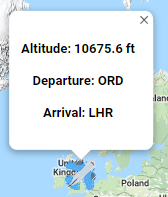

Plane Tracker Tutorial
For the data of the flights to be retrieved an external API must be used to pull the information in order to display it on the map.
The API that was used for this is from Aviation-Edge and is their "Flight Tracker" API
This includes an abundance of information about each flight from departures and arrivals to current flight speeds.
When called, the API will return this data in the following JSON format:
[ { "geography": { "latitude": 47.8901, "longitude": -3.66528, "altitude": 11582.4,
"direction": 2.72637 }, "speed": { "horizontal": 814.88, "isGround": 0, "vertical": 0 },
"departure": { "iataCode": "AGP", "icaoCode": "LEMG" }, "arrival": { "iataCode": "GLA", "icaoCode": "EGPF" },
"aircraft": { "regNumber": "GEZRV", "icaoCode": "A320", "icao24": "4074B4", "iataCode": "A320" },
"airline": { "iataCode": "U2", "icaoCode": "EZY" }, "flight": { "iataNumber": "U26864", "icaoNumber": "EZY6864", "number": "6864" },
"system": { "updated": "1554845919", "squawk": "0" }, "status": "en-route" },
The purpose of this webpage is for users to use in parallel with the rest of the site (for example the Earthquakes and Floods pages etc), in order to stay safe and aware on their travels of what is happening in the world around them.
It allows users to simply at the click of a button, view a live feed of current flights around the world and their location. Additional information is also available including the flights current altitude, and departure and arrival airports.
To view this information on the map, firstly the user must click the "View Flights" button, this will then call the API which returns in the JSON format as shown above. To display the flights on the map, the longitude and latitude of each plane is used to create a custom marker on the map which is displayed as an image of a plane. The degrees is also included in the API which is used to display the direction which the plane is headed.
The user may also click on any of the plane markers to view more information about the flight, such as the current altitude of the plane and departure and arrival destinations.
